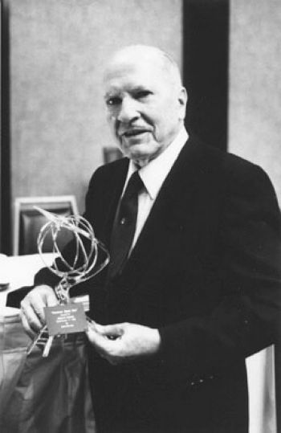

|

Роберт Энсон Хайнлайн (Robert Anson Heinlein; 7 июля 1907 года, Батлер, Миссури, США — 8 мая 1988 года, Кармел, Калифорния, США) — американский писатель, один из крупнейших писателей-фантастов, во многом определивший лицо современной научной фантастики. Его называют «деканом писателей-фантастов».
Хайнлайн стал первым профессиональным писателем-фантастом США и одним из первых, кто стал публиковаться в крупных популярных изданиях, например, The Saturday Evening Post в конце 1940-х годов. Его первые рассказы появились в журнале Astounding Science Fiction в 1939 году, он относился к группе писателей, ставших известными благодаря редактору Astounding Джону Кэмпбеллу. Карьера писателя длилась почти полстолетия, в своём творчестве Хайнлайн затронул многие темы, в том числе социальные и философские: индивидуальную свободу, ответственность индивида перед обществом, роль и формат семьи, природу организованной религии и многие другие.
В англо-американской литературной традиции Роберта Хайнлайна вместе с Артуром Кларком и Айзеком Азимовым относят к «Большой тройке» писателей-фантастов. Он стал обладателем престижных премий «Хьюго» и «Небьюла», единственным писателем, получившим «Хьюго» за пять романов. В его честь названы астероид и кратер на Марсе.
Наследие Хайнлайна:
Наряду с Айзеком Азимовым и Артуром Кларком, Роберт Хайнлайн оценивается как один из трёх Великих Мастеров фантастики, он признавался первым в этой тройке. Он был одним из ярких представителей Золотого века научной фантастики и начало его карьеры было тесно связано с редактором Astounding Science Fiction Джоном Кэмпбеллом.
Известность пришла к Хайнлайну очень рано. Уже в 1953 году при опросе ведущих НФ-авторов того времени, он указывался как наиболее влиятельный современный автор. В 1974 году его первым из всех писателей-фантастов удостоили Damon Knight Memorial Grand Master Award за прижизненные заслуги перед научной фантастикой. Критик Джеймс Гиффорд писал: «Хотя многие другие авторы превзошли Хайнлайна по результативности, мало кто может утверждать, что оказал настолько обширное и продуктивное влияние на жанр, как он. Десятки писателей-фантастов довоенного Золотого века по сей день с неприкрытым энтузиазмом доверяются Хайнлайну ради развития собственной карьеры, формирования своего стиля и сюжетов.
Хайнлайн внёс свой вклад и в освоение космоса. В снятом по его сценарию фильме 1950 года «Место назначения — Луна» пропагандируется идея космической гонки с Советским Союзом, за десять лет до того, как это явление стало узнаваемым, при этом фильм продвигался посредством беспрецедентной рекламной кампании в печатных изданиях. Многие астронавты и другие лица, причастные к космической программе США, вдохновлялись творчеством Роберта Хайнлайна, например, его повестью «Человек, который продал Луну».
Всего за 48 лет писательской карьеры Хайнлайн создал 33 романа, 59 рассказов и 16 сборников произведений. По мотивам его сочинений снято 4 кинофильма, 2 телесериала, несколько радиопостановок и прочее.
В СССР Хайнлайн впервые был переведён ещё в 1944 году, однако к 1990 году число изданий Хайнлайна на русском языке не превышало 20. В основном это были рассказы, только в 1977 году в журнале «Вокруг света» (№ 1-5) был опубликован роман «Пасынки Вселенной». С 1990-х годов популярность писателя в России резко выросла (45 изданий в 1992 году, к 2003 — более 500), увидели свет несколько представительных собраний сочинений. Первым из них были «Миры Роберта Хайнлайна» в 25 томах.
В 2003 году организацией, ответственной за сохранение наследия Хайнлайна, была учреждена его именная премия, которая вручается за написание произведений, вдохновляющих людей на освоение космоса. Также есть литературная премия по имени героя рассказа «Зелёные холмы Земли» — космонавта, потерявшего зрение, но не космос и ставшего космическим бардом — присуждаемая за лучшее фантастическое произведение, написанное в поэтической форме.
|